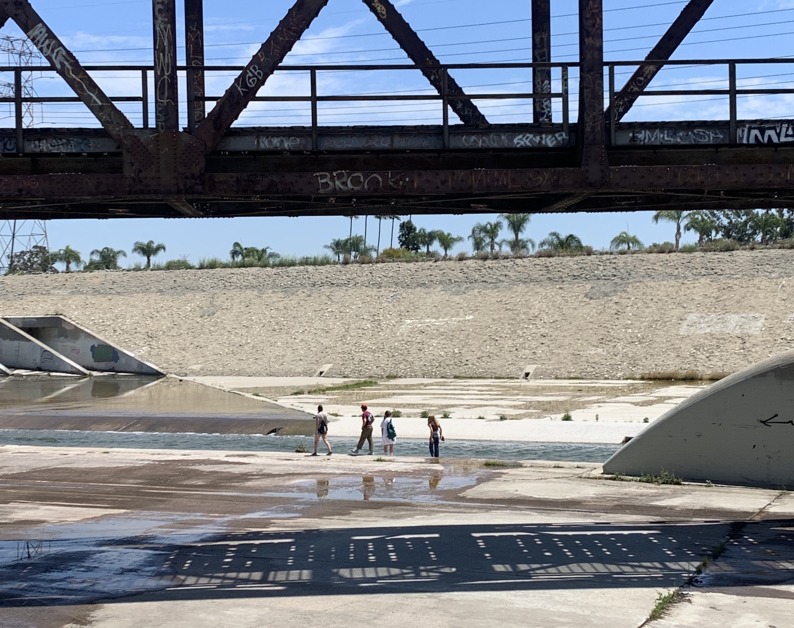

Problem Statement
Rather than being the jewel of Los Angeles that weaves the region’s diverse inland and coastal communities together with access to nature and resilience against climate change, the 51-mile Los Angeles River instead is a largely concretized and highly polluted flood channel. The River bisects numerous distinct LA communities, continues to pose flood risk for nearby residents, and is home to a significant portion of LA’s homeless population. Tremendous (and increasing) development pressure is already happening along the River, displacing communities that have lived alongside it for generations and foreclosing potential future restoration of the River. Moreover, despite the centrality of the River to the region, and for how long it has been part of our civic dialogue, a paucity of information exists as to how we can best balance the critical flood control needs of the River with ecological restoration and community revitalization.
In recent years, the LA River has become increasingly newsworthy as revitalization and development plans have inspired both cheer and disdain from community members invested in our city’s namesake River. Perhaps most controversial is a proposed plan under the County’s draft LA River Master Plan Update to cap large stretches of the River with artificial platforms, which would provide park space atop the River to some of the region’s most impacted and park-poor communities. While a laudable goal, such a plan will be prohibitively expensive (on the scale of billions of dollars), could displace existing River-adjacent communities, and could foreclose any potential for ecological restoration of the River.
Project Objectives
As an alternative to platform parks, Los Angeles Waterkeeper is interested in identifying the potential to provide the same parks and greenspace to River-adjacent communities through more distributed and community-oriented projects. Building multiple community parks in lieu of one or two large platform park projects on top of the River can result in numerous benefits.
Significance
Identifying more greenspace opportunities away from the River has the potential to influence the priorities within current LA River planning and implementation processes, which will impact the lives of millions of Angelenos. This report presents a compelling alternative to the platform parks proposed by the County, generating more community support for ecological restoration of the entirety of the River. Even if platform parks are ultimately constructed on some stretches of the River, this research is still a useful tool to give residents in those communities more power to advocate for expanded park development distributed throughout their neighborhoods.
Furthermore, more expanded and distributed greenspace would have tangible beneficial impacts on water quality and local water supplies. Stormwater runoff is the leading source of water pollution in Los Angeles, and building more parks means that more rainwater is able to percolate into groundwater aquifers below the surface, rather than flowing over concrete, into storm drains, and out into the ocean.